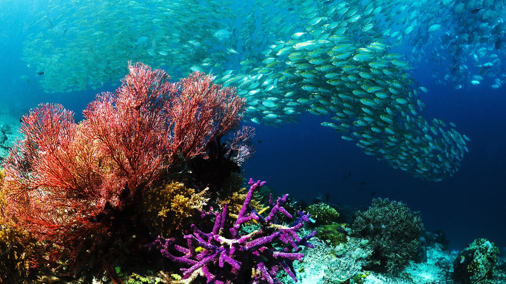

Coral Bleaching
Coral reefs are one of the largest ecosystems on Earth with the highest biodiversity,
supporting 25% of marine life and boosting coastal economies globally through tourism,
fishing, and recreation. Coral reefs, along with coastlines, are major defence mechanisms
for coastal countries, to shelter them from storms and erosion.
However, with the rise in global sea temperatures and levels,
other factors such as salinity and acidity of the ocean waters have changed too,
this causes a huge problem for coral reefs as they require very specific conditions in order to grow properly.
The effects of global warming, over-fishing, erosion from tourism and runoff from man-made factories also
causes a phenomenon called “coral bleaching”, by which corals lose their colour as they expel a microalgae
called zooxanthellae that are found within their tissue cells. “Bleached” corals become more vulnerable to
diseases and death, over the last decade more than 50% of coral reefs have died and the percentage is expected
to rise to 90% by 2050.
Figma Design
